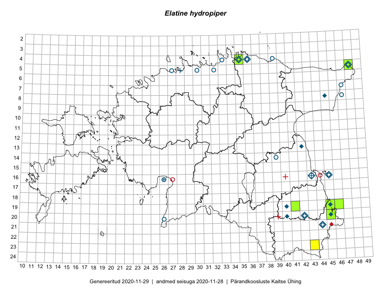

Elatine hydropiper
Uuendatud: 2016-12-08
Kaardile koondatud taksonid: Elatine hydropiper L.

Kaart põhineb 6 vaatlusel. Taime on leitud 4 ruudust.
| Ruut | Vaatleja(d) | Vaatlusaeg | Kirje tüüp | Viide andmebaasikirjele |
|---|---|---|---|---|
| 20-45 | Katrit Karus, Tõnu Feldmann | 2015-07-27 | ruut/ala | vaata PlutoFis |
| 19-46 | Meeli Mesipuu, Thea Kull | 2015-08-19 | ruut/ala | vaata PlutoFis |
| 19-41 | Kadi Palmik, Helle Mäemets | 2015-08-13 | ruut/ala | vaata PlutoFis |
| 19-41 | Kadi Palmik, Helle Mäemets | 2015-08-13 | punkt | vaata PlutoFis |
| 19-45 | Meeli Mesipuu, Thea Kull | 2015-08-19 | punkt | vaata PlutoFis |
| 19-46 | Meeli Mesipuu, Thea Kull | 2015-08-19 | punkt | vaata PlutoFis |